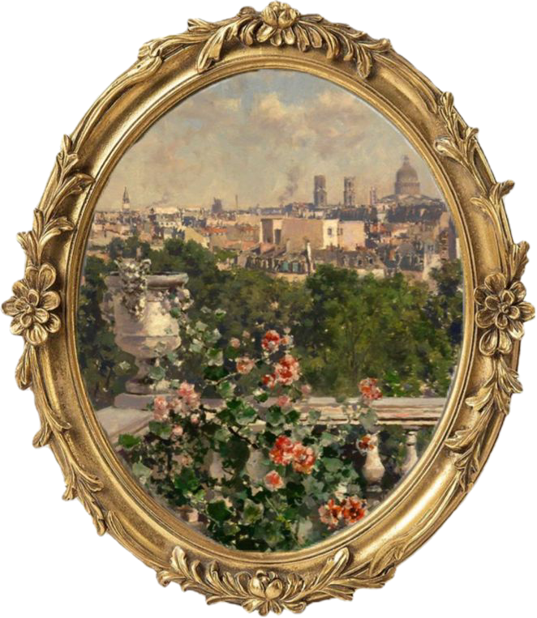

Click open the door to continue!

My responsibilities included writing the script and recording myself presenting in front of the camera. These were relatively straightforward, as I was already comfortable speaking English.
This was the most challenging part because I had never edited a video before. I had to learn almost everything from scratch by watching YouTube and TikTok tutorials, trying out different effects and gradually figuring out my own editing workflow.
After spending many hours editing my section, I received some help from Bao, who further improved the audio quality of my recording. His help made the final product better.
Initially, I was excited about making a video essay because it was something different from the usual PowerPoint presentations we were used to.
However, I soon realized how much work was involved. I was particularly overwhelmed when I started editing because I had very little technical knowledge. The lack of a shared editing theme also made things more difficult, as everyone's videos ended up looking quite different.
I was also concerned when Khoi initially wanted to take on almost all the editing responsibilities. Although I appreciated his enthusiasm, I didn't think it was reasonable for one person to carry such a heavy workload. I was glad that we managed to discuss this and encourage everyone to contribute.
Towards the end, I was extremely exhausted after spending tens of hours editing and eventually pulling an all-nighter. Nevertheless, finishing my section gave me a strong sense of satisfaction and achievement. I was especially proud that I had managed to learn something completely new and contribute to the group's final product.
We mainly communicated through face-to-face discussions during class and our group chat. These were where we exchanged ideas, discussed arrangements and coordinated our work.
Initially, we discussed different opinions and tried to reach compromises. However, once we started producing the video, we became more flexible and adjusted our plans as we went along. Since none of us had much experience with video production, we often had to figure things out along the way.
Not everyone contributed in exactly the same way or to the same extent. I think this was partly due to the nature of the project, as not everyone was equally comfortable speaking English in front of a camera or had the technical skills needed for editing. We therefore took on different responsibilities based on our individual strengths and abilities.
Our collaboration wasn't always smooth. We experienced delays, unclear responsibilities and differences in editing styles. In particular, we hadn't properly discussed the overall visual direction or agreed on the workload beforehand.
Despite these difficulties, I had a positive experience working with my teammates. Everyone eventually contributed in their own way, and I appreciated the fact that we managed to complete something quite ambitious despite our limited experience.
The most obvious skill I gained was video editing. Through online tutorials and repeated experimentation, I became familiar with different editing techniques, audio synchronization, transitions and visual effects.
I also learned how to teach myself something completely unfamiliar. I realized that I didn't necessarily need to know how to do something beforehand; I could gradually develop the necessary skills through research, practice and experimentation.
I learned that simply dividing tasks among members isn't enough to ensure effective collaboration. We also need to agree on the overall direction, set clear expectations and make sure that everyone's contributions fit together.
If I could do this project again, I'd suggest agreeing on a common visual theme and editing style before everyone started working on their individual sections. This would help us produce a more consistent final video.
I'd also encourage the group to clarify everyone's responsibilities, discuss individual availability and set intermediate deadlines instead of leaving too much work until the final week.
On my part, I'd prepare better recording equipment, particularly a proper microphone. Recording in the library using my laptop camera wasn't ideal, and the audio quality could have been much better.
I'd also set aside more time to learn the necessary editing techniques instead of figuring everything out under considerable time pressure.
I think these lessons go beyond video production. Whether we're working on financial analysis, business case studies or presentations, we should establish a shared understanding of the final deliverable, divide responsibilities clearly and make sure individual contributions come together into a coherent final product.